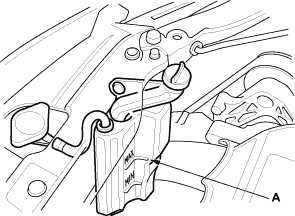
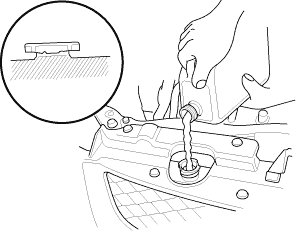

- After the coolant has drained, tighten the radiator drain plug securely and install the reserve tank drain cap securely.
- Fill the reserve tank to the MAX mark (A) with genuine Honda All Season Antifreeze/Coolant Type 2.


- Pour genuine Honda All Season Antifreeze/Coolant Type 2 into the radiator up to the base of the filler neck.
NOTE:
- Always use genuine Honda All Season Antifreeze/Coolant Type 2. Using a non-Honda coolant can result in corrosion, causing the cooling system to malfunction or fail.
- Genuine Honda All Season Antifreeze/Coolant Type 2 is a mixture of 50% antifreeze and 50% water. Pre-mixing is not required.
Engine Coolant Refill Capacity [including the reserve tank capacity of 0.53 l (0.56 US qt, 0.47 lmp qt)]:
5.3 l (5.6 US qt, 4.7 lmp qt)

- Install the radiator cap loosely.
- Start the engine, and let it run until it warms up (the radiator fan comes on at least twice).
- Turn off the engine. Check the level in the radiator and add genuine Honda All Season Antifreeze/Coolant Type 2 if needed.
- Put the radiator cap on tightly, then run the engine again and check for leaks.
- Install the splash shield (see step 18 on page 5-14).